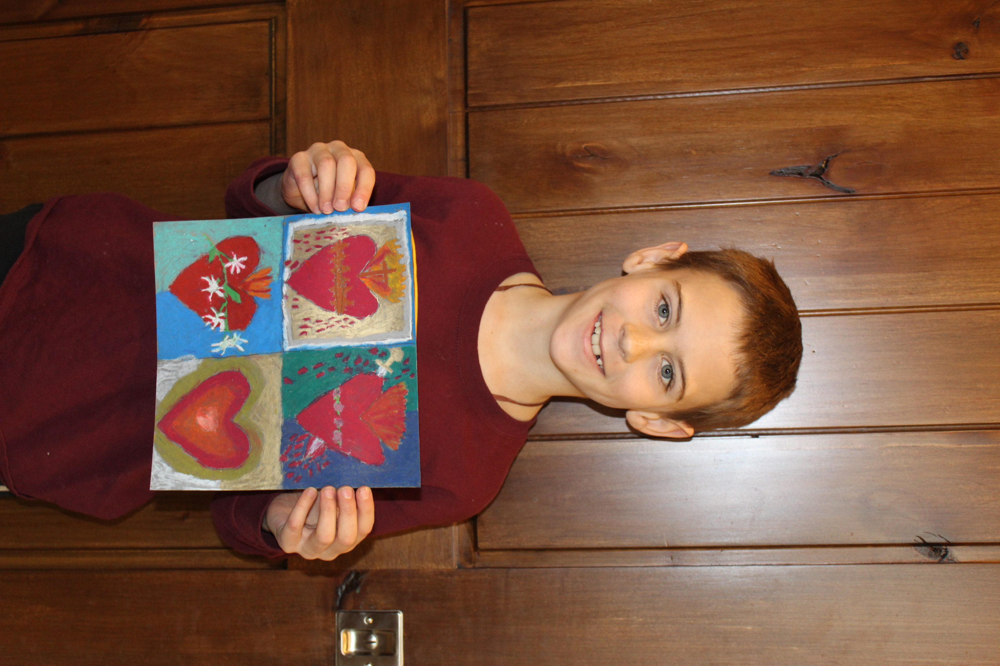
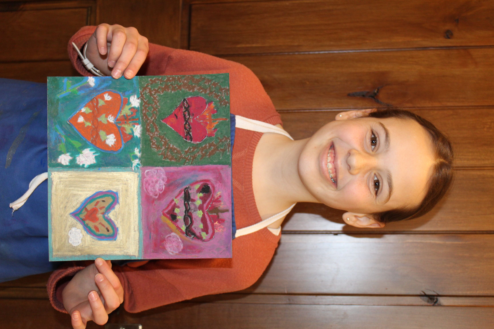
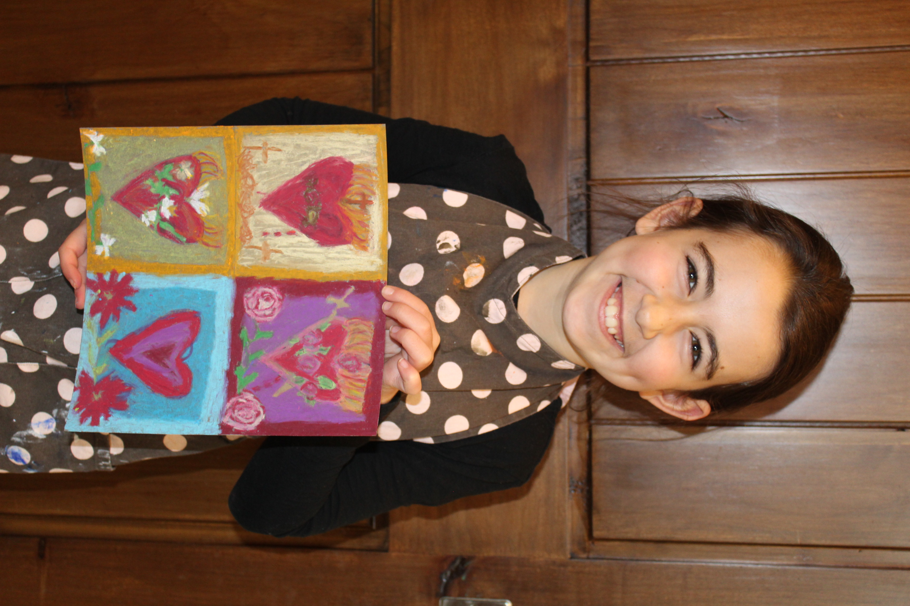
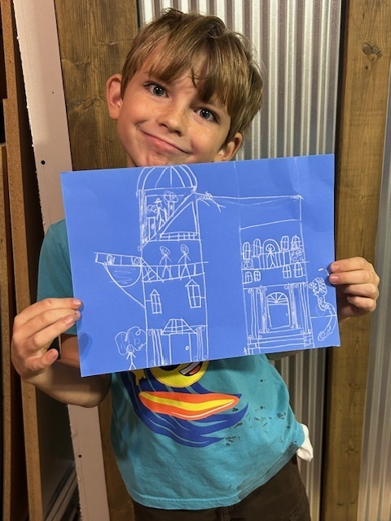
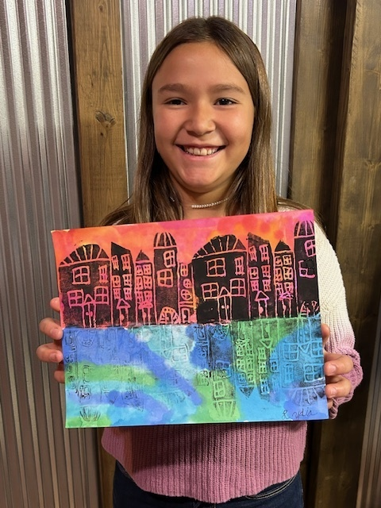
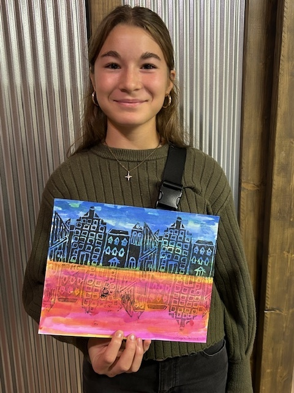
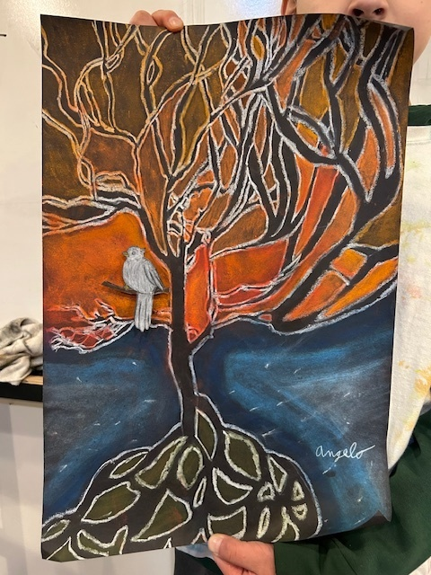

Our classes
At Saint Joseph's AtelierThe program is a holistic art curriculum where students encounter many media throughout the semester.
Each semester offers classes for several levels. Classes focus primarily on two-dimensional art and also include opportunities for three-dimensional clay building. Little Lambs (ages 4–6) learn art fundamentals through instructor-led lessons with room for exploration. Art Foundations is where primary-level artists focus on developing an artist’s eye by drawing and painting from observation. Teens seeking quiet concentration may join the Silent Flight Barn Owls and go deeper into technical skills. Sacred Art explores beauty found in churches, sacred books, and liturgy. Mary’s Lamp-Lighters offers a night out for moms, and Art Café Days are special art-camp days for everyone to enjoy. Select a program below for details; see the Calendar for dates and fees.

Art Foundations and Skill Building
Primary level (ages 7–16). Perfect for beginners to intermediate artists, art history, elements of art, and principles of design through chalk pastel, oil pastel, watercolor, acrylic, and printmaking.

Little Lambs
An atelier for children ages 4–6. A monthly workshop to explore line, shape, and color, with art history and projects matched to their developmental needs.

Silent Flight Barn Owls
Skill refinement and mastery for teens. Quiet your mind, focus your art, and leave the noise outside, deeper technical work with more independent artistic choice.

Sacred Art Atelier and Scriptorium
Faith and creativity through icons, illuminated manuscripts, church sculpture, and other beautiful traditions of Catholic art found in churches, sacred books, and liturgy.

Art Café Days
For ages 7–18. Focused on process and experimentation, each day serves a different menu of media in a relaxed, art-camp atmosphere with room for personal inspiration.

Mary’s Lamp-Lighters
A space for moms and young adult women to create from a prayerful place of peace and rest, nurturing creativity, skills, and beauty in community.

Class Category Details
Select a program from the filter menu to view ages, format, media, and what to expect. Dates, tuition, and seating details are on the Calendar page.
What's included
All Art Supplies Included
Premium materials are provided for every project, paints, brushes, watercolor paper, chalk and oil pastels, printmaking supplies, inks, clay, and mixed-media materials.
Art History & Artist Studies
Students learn from master artists such as Paul Cézanne, John Singer Sargent, Winslow Homer, Claude Monet, and others whose work illustrates important art concepts and techniques.
Personal Instruction
Semi-private classes are limited so each student receives individualized guidance, encouragement, and support in a gentle, focused atmosphere.
Original Take-Home Projects
Every student creates unique artwork from scratch. No pre-cut shapes or templates, projects encourage originality and celebrate each child’s personal mark.